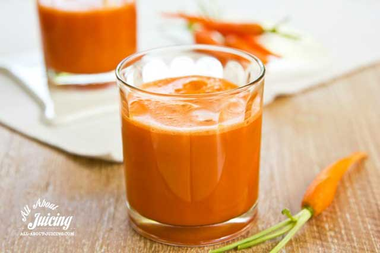

Jus 3 Diva

Jus 3 Diva ini bisa menjadi solusi cerdas untuk Anda para calon ibu yang ingin cepat hamil dengan cara sehat, aman, dan tentu saja sudah terbukti hasilnya.
Apa sih Jus 3 Diva itu? Seringkali disebut Femmie Juice yang berisi tiga bahan utama yang dipakai untuk membuat jus yaitu buah apel, wortel dan tomat merah.
Jus ini mengandung vitamin dan nutrisi yang bisa meningkatkan kesuburan pasangan suami istri. Alami dan menyehatkan badan. Disamping itu, rasanya juga ENAKK!
Resep :
Waktu penyajian : 10 menit
Resep untuk : 2 porsi Bahan-bahan yang dibutuhkan2 buah apel
4 – 6 wortel
2 buah tomat merah
Cara Membuat:
Cuci bersih semua buah, lalu masukkan ke dalam juicer/blender.
Proses hingga sarinya keluar, tampung dalam gelas.
Sajikan dingin agar lebih segar.
Minum jus ini secara teratur setiap hari selama 3-5 bulan pada pagi dan sore. Usahakan saat mengkonsumsi Jus 3 Diva ini dalam keadaan perut yang masih kosong agar penyerapan nutrisi bisa lebih optimal. Terapi Jus ini adalah alternatif alami yang sangat baik daripada minum obat dari dokter.